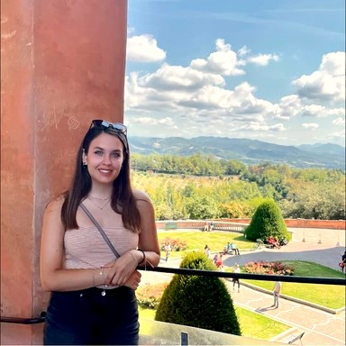
From Cento, Italy. Grew up in Hungary, spent a year in Denmark. Trained at CIE, interned at Chez Dodo. Looking for a pastry kitchen in Budapest.
Centóból, Olaszország. Magyarországon nőttem fel, egy évet Dániában töltöttem. A CIE-nél tanultam, a Chez Dodo-ban gyakornokoskodtam. Cukrászkonyhát keresek Budapesten.
Da Cento, Italia. Cresciuta in Ungheria, un anno in Danimarca. Formata al CIE, stage al Chez Dodo. Cerco una cucina a Budapest.
I grew up in Cento, a small town in Emilia-Romagna, and moved to Hungary as a kid. I studied marketing and international relations, then spent about five years in corporate — Grundfos, Hydro, Videoton, and currently Emerson. It was a good career but not what I wanted to keep doing. In 2024 I started a one-year pastry diploma at the Culinary Institute of Europe. This past summer I did my internship at Chez Dodo in Budapest — they hold a La Liste Pastry Discovery Gem distinction, one of about five worldwide. I make tarts, choux, macarons, bonbons, and ice cream. I'm looking for a small team where I can keep learning.
Centóban nőttem fel, egy kis városban Emilia-Romagna tartományban, aztán gyerekként Magyarországra költöztünk. Marketinget és nemzetközi kapcsolatokat tanultam, utána körülbelül öt évig multinacionális cégeknél dolgoztam — Grundfos, Hydro, Videoton, jelenleg Emerson. Jó karrier volt, de nem azt akartam csinálni egész életemben. 2024-ben elkezdtem egy egyéves cukrász képzést a Culinary Institute of Europe-nál. Idén nyáron a Chez Dodo-ban gyakornokoskodtam Budapesten — La Liste Pastry Discovery Gem díjasok, a világ körülbelül öt ilyen helyének egyike. Tartákat, choux-t, macaronokat, bonbonokat és fagylaltot készítek. Kis csapatot keresek, ahol tovább tanulhatok.
Sono cresciuta a Cento, un paesino in Emilia-Romagna, poi da bambina ci siamo trasferiti in Ungheria. Ho studiato marketing e relazioni internazionali, poi ho lavorato circa cinque anni in aziende multinazionali — Grundfos, Hydro, Videoton, e attualmente Emerson. Una buona carriera, ma non quello che volevo continuare a fare. Nel 2024 ho iniziato un diploma annuale di pasticceria al Culinary Institute of Europe. Quest'estate ho fatto lo stage al Chez Dodo a Budapest — hanno il riconoscimento La Liste Pastry Discovery Gem, uno di circa cinque al mondo. Faccio crostate, choux, macaron, bonbon e gelato. Cerco un piccolo team dove continuare a imparare.
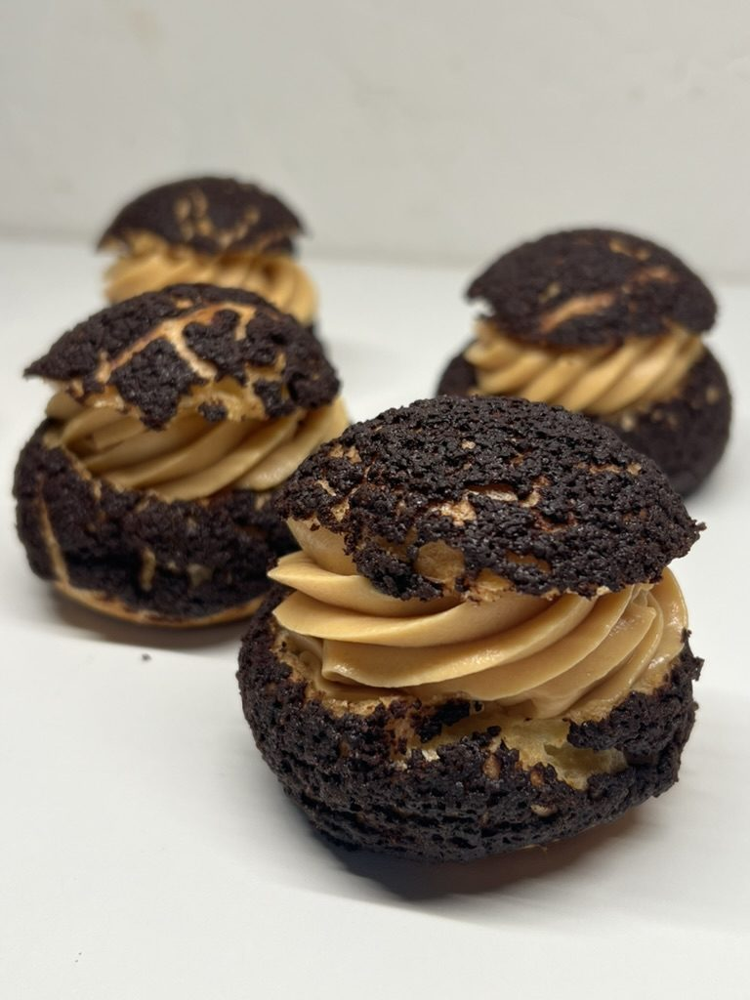
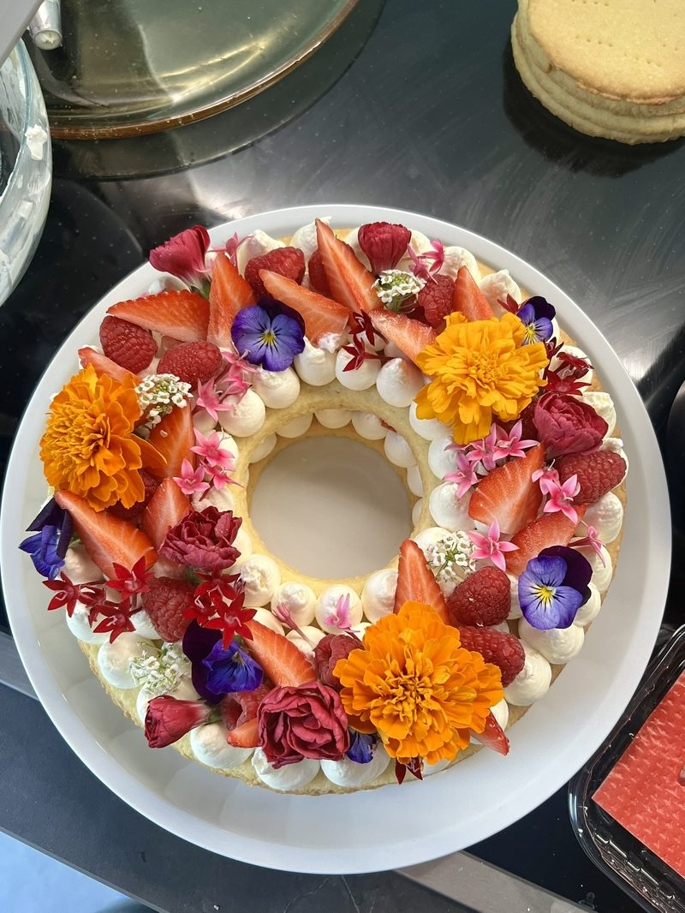
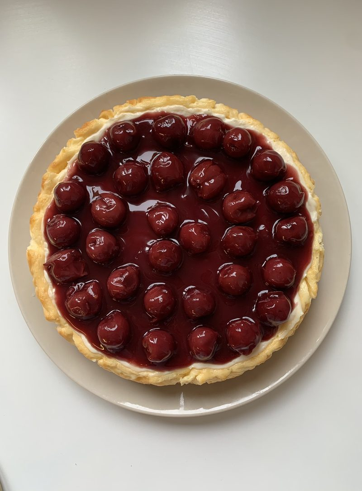
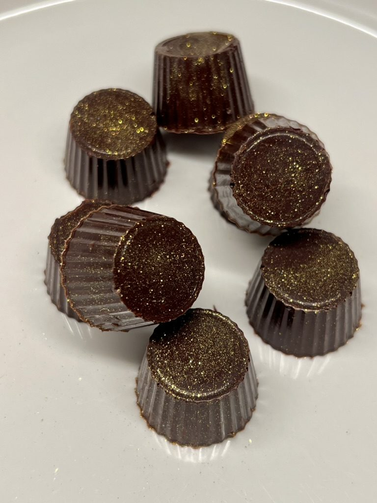
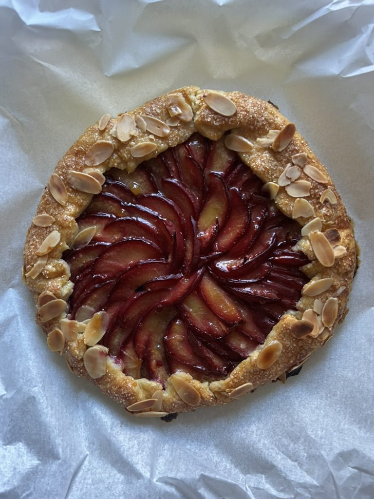
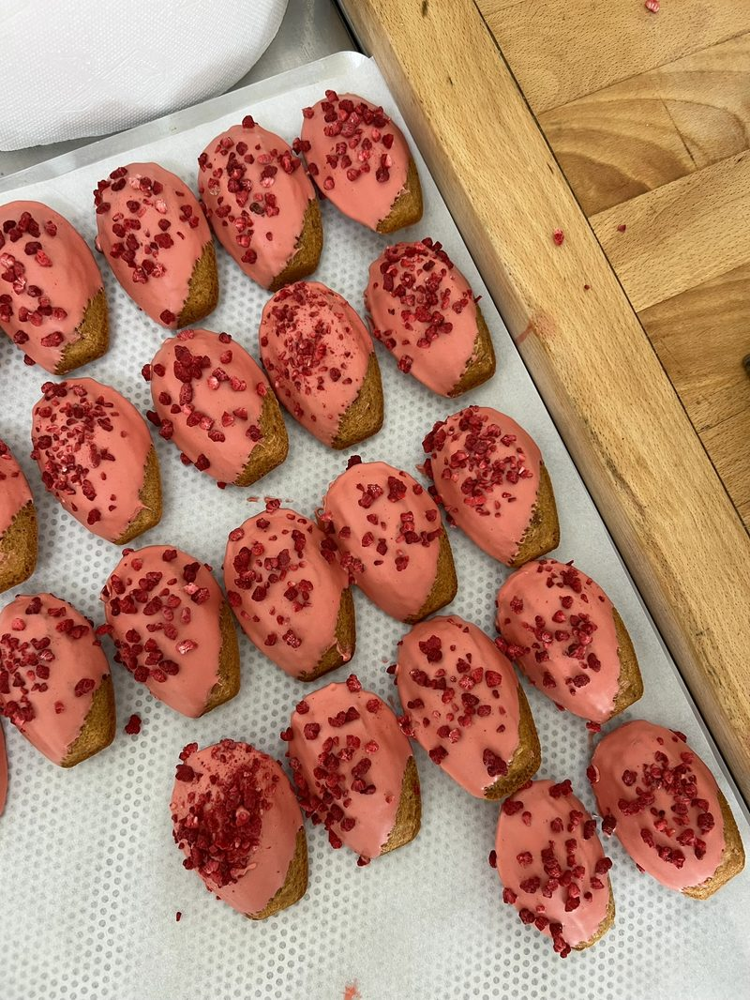
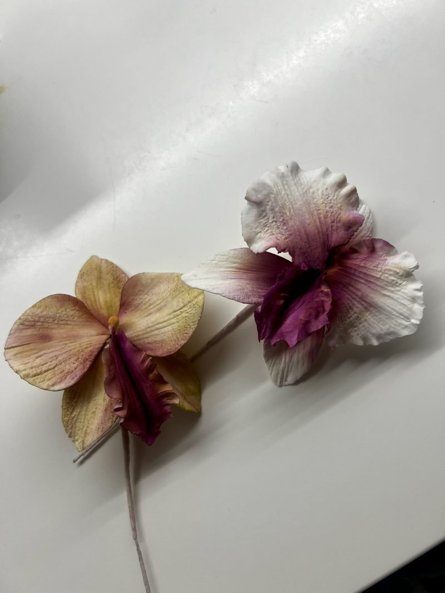
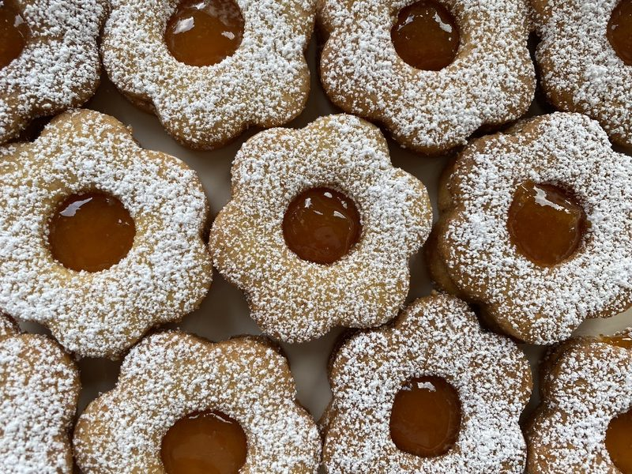
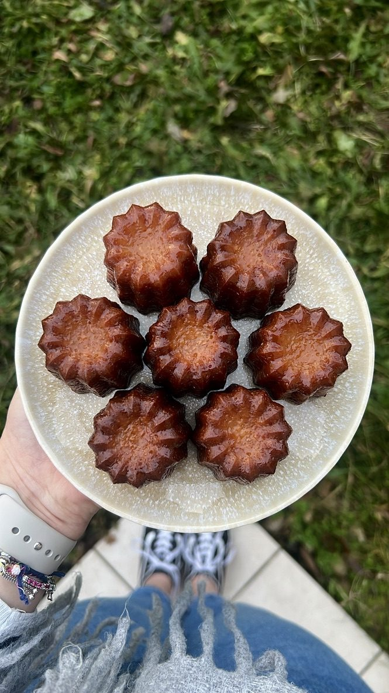
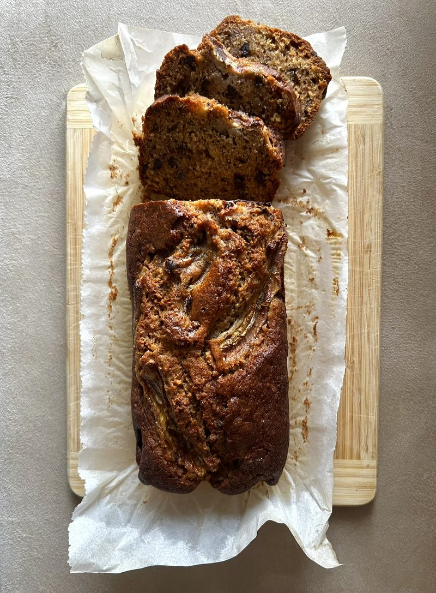
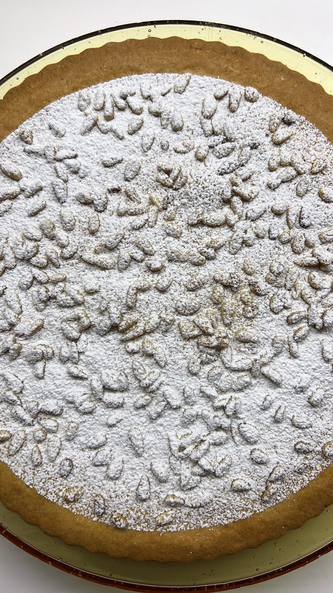
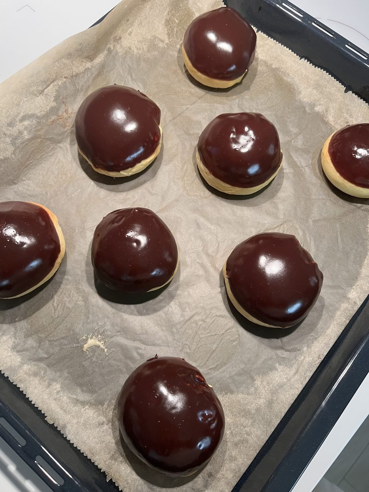
Culinary Institute of Europe — one-year professional pastry training. French technique foundations, sugar work, chocolate, bread, ice cream.
Culinary Institute of Europe — egyéves szakmai cukrász képzés. Francia technika alapok, cukormunka, csokoládé, kenyér, fagylalt.
Culinary Institute of Europe — formazione professionale annuale. Tecniche francesi, lavoro dello zucchero, cioccolato, pane, gelato.
Managing Italian & English-speaking enterprise clients across Italy and the Middle East. Part-time alongside pastry studies.
Olasz és angol nyelvű vállalati ügyfelek kezelése, Olaszország és Közel-Kelet. Részmunkaidőben a cukrász tanulmányok mellett.
Gestione clienti enterprise italiani e anglofoni in Italia e Medio Oriente. Part-time durante gli studi di pasticceria.
Marketing & BD (Videoton, 2024), supply chain intern (Hydro, 2023), HR comms & quality (Grundfos, 2020–22), hotel reception (Szárcsa, 2019–20). Four multinationals, three languages, five years of working across borders.
Marketing és üzletfejlesztés (Videoton, 2024), ellátási lánc gyakornok (Hydro, 2023), HR kommunikáció és minőségbiztosítás (Grundfos, 2020–22), recepció (Szárcsa Hotel, 2019–20). Négy multinacionális, három nyelv, öt év határokon átívelő munka.
Marketing e BD (Videoton, 2024), stage supply chain (Hydro, 2023), comunicazioni HR e qualità (Grundfos, 2020–22), reception hotel (Szárcsa, 2019–20). Quattro multinazionali, tre lingue, cinque anni di lavoro internazionale.
MSc Marketing, BSc International Relations (Metropolitan University, Budapest). AFS exchange year in Denmark (Herning Gymnasium, 2016–17).
MSc Marketing, BSc Nemzetközi kapcsolatok (Metropolitan Egyetem, Budapest). AFS cserediák év Dániában (Herning Gymnasium, 2016–17).
MSc Marketing, BSc Relazioni Internazionali (Metropolitan University, Budapest). Anno di scambio AFS in Danimarca (Herning Gymnasium, 2016–17).
Available for pastry positions, stages, and collaborations.
Cukrász pozíciókra, gyakorlatokra és együttműködésekre nyitott.
Disponibile per posizioni in pasticceria, stage e collaborazioni.